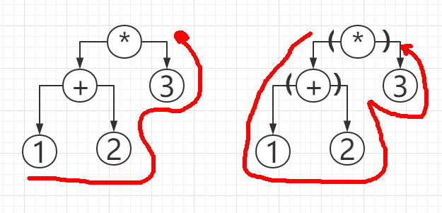

声明：
本文大部分内容摘抄或整理来自
《代码之髓》2014年8月第一版
原作者：西尾泰和
译者：曾一鸣
本文仅提到了少部分书中精彩之处，仅供本人再学习和消化吸收之用，更丰富的内容希望各位去购买阅读《代码之髓》。
专栏整理搜集
要确认理解是否正确，首先得表达出来
为了验证理解正确与否，需要表达出来。只能基于自己的理解说出自己的观点，然后让第三方来判断和检验。比如学习英语，就要在别人面前使用已经学到的英语，同时观察别人的反应。不这样的话，就无法知道自己是否真正掌握了英语。
程序员一直受益于这一点，写程序时语言处理器会事无巨细地做错误检查并指出。
当你不知道该学习什么时
生活在一个信息爆炸的时代，不管三七二十一统统要学的学习策略已经不管用。有所学有所不学，我们实现明确自己想做什么，然后再去学习能够达成这一目标的知识。
设想要达成的目标，如果设想太过宏大导致无从下手，那么这一设想就永远不可能实现。不如从小事做起，从简单的事情做起，在这个过程中，你可以逐渐明白自己哪些已经能做、哪些还不能做，如果要做还要学习哪些知识。长此以往，就能培养出完成更复杂任务的能力。
如何深入高效的学习语言
在比较中学习
多种语言共同的知识才是要点。掌握了这些要点，学习其他语言时才会更加轻松。
语言不同，规则不同
具体规则并不具有普遍意义，“只是应为在当前特定情况下，做此规定更方便“
- 实例：真假值在
Ruby中与C相反，而Java中是特定数据类型。
在历史中学习
理解语言设计者的意图
知道了语言设计者为解决何种问题而创造了这种语言，以及这种语言经历过怎么样的历史变迁后，慢慢地就能理解问什么存在这些功能了。
应该学哪种语言，我们无从而知
- 实例：
IBM在1964年发布的APL语言，当年火的不行，现在已经逐渐淘汰，而C语言长盛不衰。
学习适用于各种语言的知识
通过比较不同的语言、了解语言的发展历史及其变化原因，培养对不同语言都适用的理解能力，是非常重要的。
程序设计语言诞生史
程序设计语言诞生的历史
很多事物都是在过去的基础上，通过不断累积创造出来的。新事物是在充分了解了旧事物idea基础上发展起来的。现在看来理所当然的事情在过去可能不为世人所知。因此，对于初学者来说，学会从前人的视角考虑问题，是十分有益的。
程序设计诞生历史：
1. 1964年，ENIAC，靠电缆连接计算机不同端口来编程，每次更改程序时都要重新调整电缆连接方式。
2. 1949年，EDSAC，纸带打点的方式来记录和读取数据，程序作为数据通过纸带输入。
3. 1954年，FORTRAN语言问世，使用FORTRAN语言编译出来的机器语言，比一个熟练的程序设计者直接手写机器语言相比，效率更低。但FORTRAN语言的可读性强且代码编写量大大减少。“我的大部分成果源自我的懒惰” ——
FORTRAN设计者John Backus
程序设计语言产生的原因
懒惰：程序员的三大美德之一
”优秀的程序员具有三大美德：懒惰、急躁和傲慢“——
Perl语言设计者Larry Wall
- 懒惰：为了获得更轻松便捷的体验而编写程序
- 急躁：程序员忍受不了程序执行的低效
- 傲慢：程序员容不得对错误不管不顾
语言们各有各的便捷
为什么需要这么多种语言？这是因为，大家对于便捷的理解因人而异。
何为便捷：
- C++重视代码执行速度，为了使编程实现相同目的的同时执行速度不亚于C语言，C++语言规范变得更复杂。
- Scheme重视语言规则是否容易掌握，语言规范全部加起来只有50页，而C++有1300多页。
- Python重视代码阅读变得容易，相应的其执行速度不是很快，语言规则不那么少而紧凑。
各有各的便捷： 程序设计语言的选用因使用者目的的不同而不同。不同语言致力于达成不同的目的。语言优劣的争论意义并不是很大。
语法的诞生
什么是语法
语法就是程序语言设计者规定的解释程序编写方式的一系列规则。
运算符的优先顺序
9/3/3是9/(3/3)还是(9/3)/3?
语法是语言设计者制定的规则
语言设计者制定的规则就是语法。语法因语言而异，运算符的存在类型也因语言而异。
栈机器和FORTH语言
1958年，号称语法最少的FORTH语言诞生。
计算的流程
FORTH语言中，1加2是这样书写的
1 2 +
使用栈预存空间来首先压栈1和2，然后遇到+号，弹出栈中前两个数值，再把相加的结果压入栈。
如何表达计算顺序
2乘3再加1可以表达为
2 3 * 1 +
现在仍然使用的栈机器
Java、Python、Ruby 1.9等语言中使用了栈机器型的VM（Virtual Machine）。VM执行的命令行和FORTH语言是一样的，用Python、Ruby、Java等语言写出来的程序，在机器内部先被编译成像FORTH一样的程序，然后再运行。
语法树和LISP语言
计算流
与不需要使用括号或者优先次序就可以表达计算顺序的FORTH不同，1958年诞生的LISP语言中，1加2用代码表示如下：
2 3 * 1 +
如何表达计算顺序
对于1与2相加的结果再与3相乘，LISP中这样表示
(* ( + 1 2 ) 3 )
左图为FORTH的1 2 + 3 *，右图为LISP的((1 + 2) * 3)

与FORTH相比，两者的代码看起来差别很大，但只是语法树上按不同的规则遍历而已，实际上所用的树结构是相同的。
现在仍然使用的语法树
使用Python自带的库ast，可以查看特定代码被转换成怎样的语法树。发现由ast获取的代码转换语法树仍然与LISP相同。
中缀表达式
- 中缀表达式：
1 + 2 - 前缀表达式：
+ 1 2 - 后缀表达式：
1 2 +
语法分析器
语法分析器就是把源代码作为字符串读入、解析，并建立语法树的程序。语法的设计和语法分析器的实现是决定语言外在表现的重要因素。语言设计者在设计语法时，会考虑使用者编写的体验，同时也要从语法分析器的角度考量是否能在其中实现这些语法。
规则的竞争
实例：
// OK vector<vector<int> > x; // NG vector<vector<int>> x;
此处的>>到底是被解析为既有的移位运算符还是二重表达的括号，程序员可以通过增加空白符的方法来避免其变成移位运算符。
当然，理想情况是把语法分析器改良到能同时照顾好两方都不出错的程度。然而现实与理想总是有差距的。由既有规则的羁绊导致不自然的规则产生，这种现象不仅限于C++语言，在其他语言中同样存在。